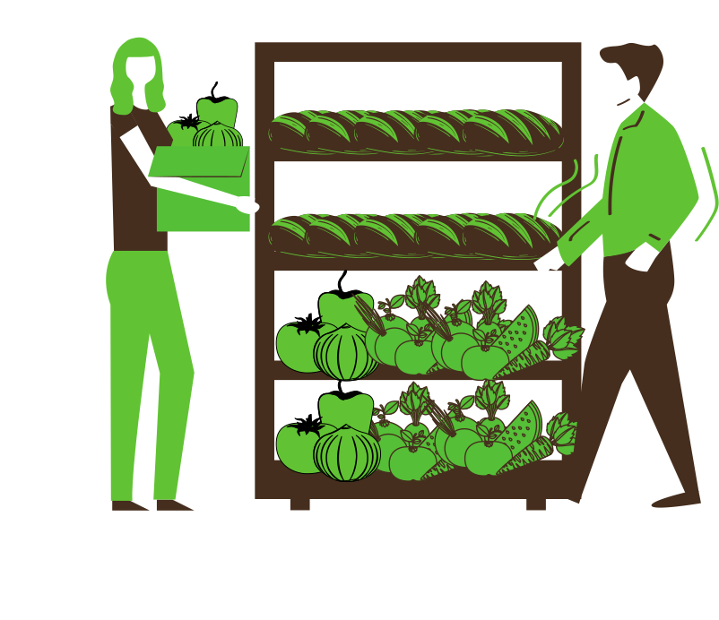

Toidupäästmisliikumise Elva haru
Toidujagamine ärgitab inimesi jagama ülejäänud toitu, mis muidu läheks prügikasti. Päästame-jagame toitu!

NB! Elva Toidujagamine pole heategevusorganisatsioon!
Elva Toidujagamine on liikumine, mis päästab ja jagab järele jäänud toitu Elvas. Elva Toidujagamine teeb koostööd linnaisikute, jaemüüjate, ettevõtete ja toidu tootjatega. Toidujagamispunktid on kantud kaardile, mille osas on info üleval meie kodulehel ja meie Facebooki lehel.
Idee pärineb Saksamaalt, kus on suur toidupäästmispunktide võrgustik, mida haldavad ja arendavad tuhanded vabatahtlikud. Sellise võrgustiku arendamine on võimalik vaid tänu aktiivsetele inimestele ja toidujäätmete tekkimise vastastele seadustele.
Aitame üle jäävat toitu laiali jagada;
Loome ja hooldame toidujagamispunkte;
Tegeleme teavitustööga sotsiaalmeedias ja koolides;
Otsime pidevalt uusi koostööpartnereid;
Rohkema toidu päästmisega.
Elva Toidujagamine funktsioneerib ainult tänu vabatahtlikule tööle ning inimestele, kes annetavad vajalikke ressursse teavitustöö ja toidujagamispunktide jaoks.

Kapp asub Elva linnas aadressil Kesk 32 maja taga. Kapp on varustatud külmkapiga.
{kind=link}
{kind=link}
{kind=link}
{kind=link}